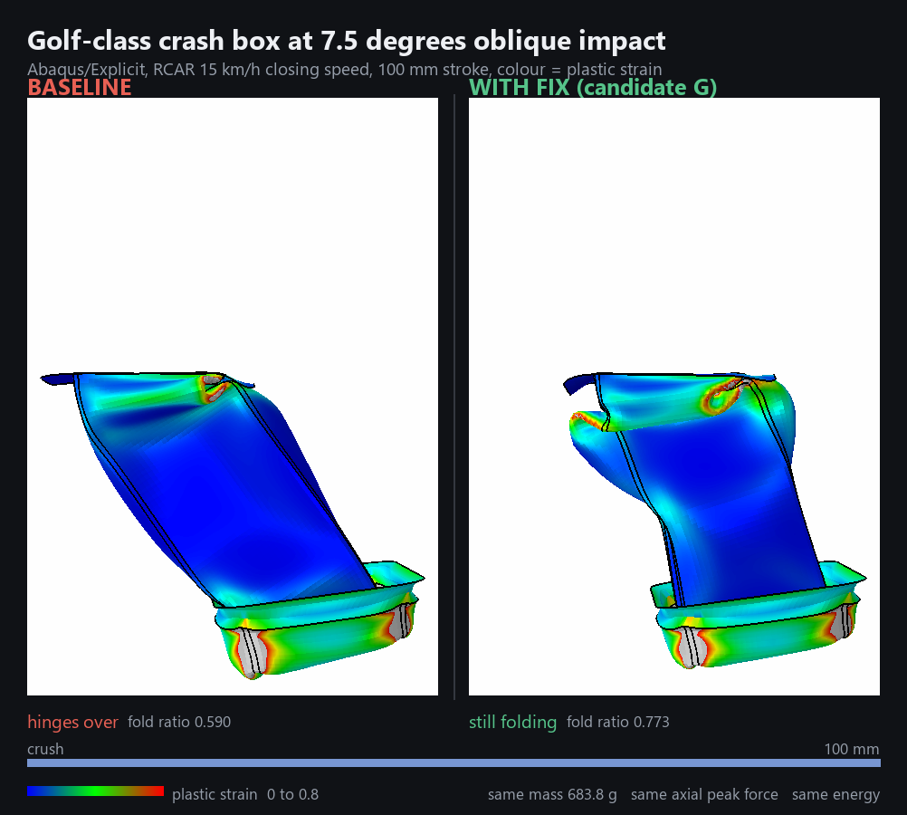
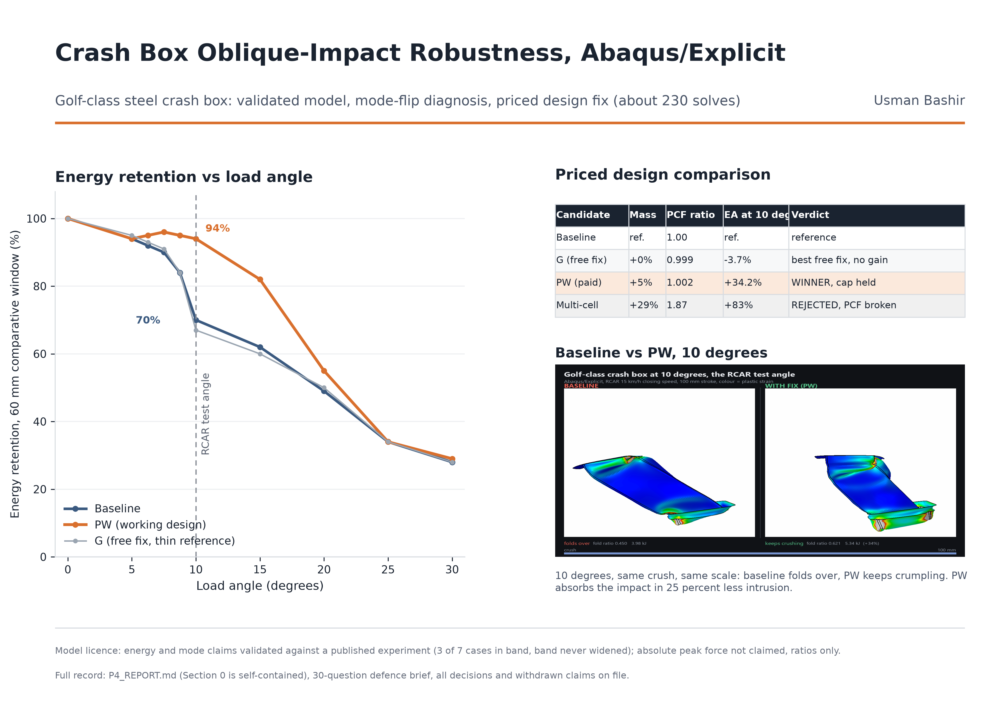

Crash Box Oblique-Impact Robustness
- Solver
- Abaqus/Explicit; scripted DOE in Python
- Validated against
- Karantza and Manolakos oblique crush experiment
- Headline
- +34%energy at the 10° test angle
- Also
- 25-point designed experiment, 50 solves
Problem
A crash box is the short thin-walled tube between a car's bumper beam and its frame rail. It is meant to crumple fold by fold, absorbing crash energy so the expensive structure behind it survives. Crash boxes are designed and certified overwhelmingly for head-on impact, where they work well, but real crashes are rarely head-on. Past some critical load angle, the neat folding becomes unstable and the box snaps sideways into global bending, hinging like a bent straw instead of crumpling, and the energy it was supposed to absorb goes into the rail and the cabin instead. This study asks three questions in order: can an Abaqus/Explicit model reproduce a published oblique crush experiment, where does a production-class box lose its folding, and can that boundary be pushed outward without paying in mass or in peak crush force, the number that decides whether a design is usable at all.
Method
The model was validated against Karantza and Manolakos' published oblique crush experiment (square AA6060-T6 extrusions) before anything else was allowed to run, against a tolerance band written down in advance. A Golf-class production steel box was then built and swept from 0 to 30 degrees. A two-by-two factorial with a plain-tube reference isolated the mechanism: it is the end flange attachment, not the tube cross-section, that governs the oblique failure, a result confirmed by testing four independent ways to stiffen the attachment, all of which bought angle performance but broke the peak-force cap. The working fix, PW, instead adds a short internal web across the loaded third of the box plus two embossed bead bands, targeted precisely at the region that was going to fail rather than stiffening the joint. A 25-point scripted Latin-hypercube DOE, built in Python on the project's own deck generator, then checked whether hand-picked geometry had left performance on the table.
Validation
The model reproduces the published axial case (peak crush force within 2.6 percent, energy absorption within 0.8 percent, matching fold count) and the deformation mode across the published oblique range. Across all seven published oblique cases, however, only 3 of 7 met the plus or minus 10 percent band declared before any solve ran, all misses in peak force under edge contact, and that band was never widened after the fact. Consequently this report claims energy against angle, the location of the fold-to-bend transition, and baseline-versus-modified comparisons in matched configuration, where a systematic bias cancels. It does not claim an absolute peak crush force at a given angle: wherever peak force appears, it is reported strictly as a ratio against the baseline. An earlier headline, that PW clears the RCAR oblique condition where the baseline does not, was withdrawn after an internal audit found the verdict had been evaluated over a 60 mm window while the text claimed the full 100 mm stroke. It is replaced below by the intrusion result, which needs no stroke-limit assumption and is stronger for it.
Headline results
| Quantity | Baseline | PW |
|---|---|---|
| Mass | reference | +5.0% |
| Axial peak crush force | 118.19 kN | 118.42 kN (+0.2%) |
| Energy retention at 10° | 70% | 94% |
| Energy at 10° vs baseline | reference | +34% |
| Stroke to absorb RCAR impact (15 km/h, 10°) | 76.0 mm | 56.8 mm (−25%) |
| Fold-to-bend transition angle | 6.25° (lower bound) | 7.5-8.75°, free fix only |
A 25-point designed experiment over PW's own bead depth, web thickness, band position and spacing ranked PW's hand-picked parameters second out of twenty-five, beaten by 0.83 percent, inside the 3 percent threshold declared before the study ran. The fitted response surface across that same design space was a documented failure (R2 = 0.715, cross-validated Q2 = −8.35): the design space contains a fold-versus-bend mode boundary that no polynomial surface can represent, and a verification run confirmed the surface's own prediction was wrong by 68.8 percent. That failure is reported as a finding, not hidden.
In motion
Figures


Limitations
- No validated absolute peak crush force at a given angle exists in this study; every peak-force claim is a ratio against the matched baseline.
- The 6.25 degree fold-to-bend transition is a pessimistic lower bound, set by modelling the end attachment as a free-standing 1.8 mm flange rather than a bolted, rail-stiffened joint. A better-represented joint would move the number outward.
- PW is a fix for roughly 6 to 20 degrees; beyond 20 degrees it converges on the baseline, and by 30 degrees the two are indistinguishable.
- The earlier RCAR clears/fails framing was withdrawn after audit; only the intrusion (stroke) comparison is claimed, and it holds across every plausible assumption about how crash energy splits between the struck side and the rest of the structure.
- The geometry is a documented Golf-class reconstruction, not a measured production part, so claims are about the box family, not a specific vehicle.